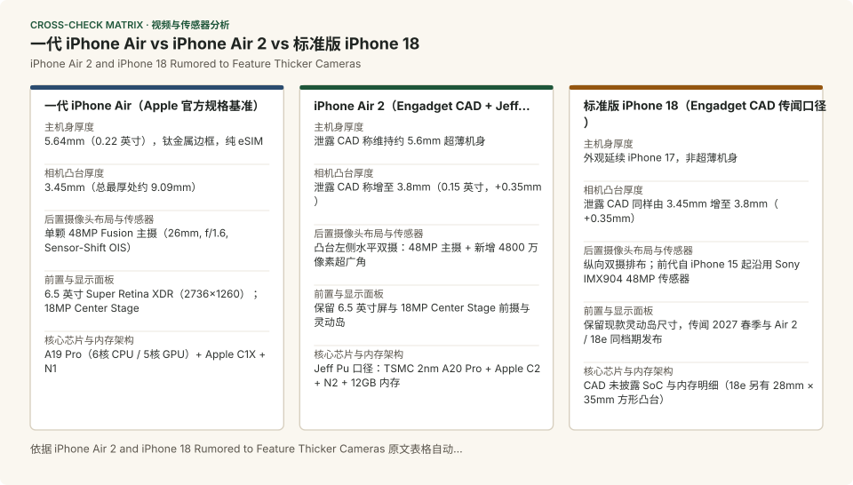

Engadget (Filipe Espósito CAD 原始披露) · Apple iPhone Air 官方规格基准 (附 Jeff Pu 口径) 2026-11-24 iPhone Air 2 and iPhone 18 Rumored to… 1/1放大 直接穿透至本次传闻链条的上游原始披露 Engadget 2026-11-23 供应链 CAD 独家报道 并对照 Apple 官方一代 iPhone Air 技术规格（Model A3260）可知，触发线索 MacRumors 2026-11-24 报道 本身并非一手起源，而是将 Engadget 披露的 CAD 厚度变化（iPhone Air 2 与标准版 iPhone 18 相… 阅读导读 原件 ↗